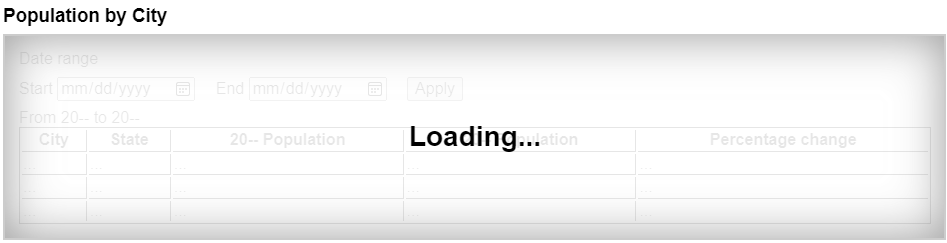
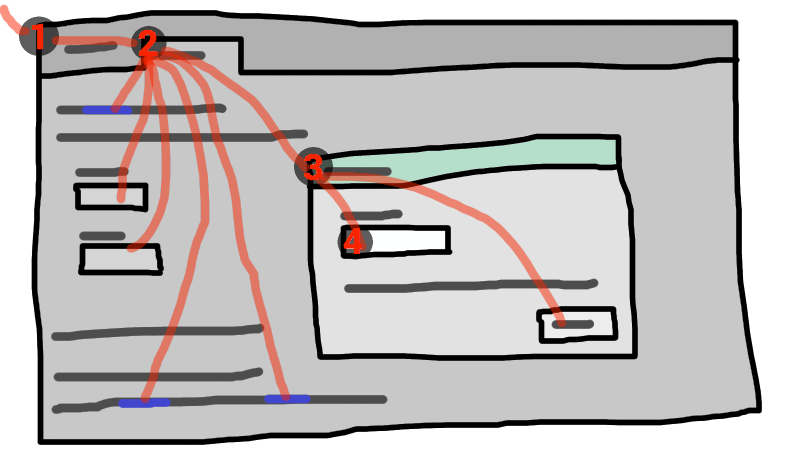

User interaction
The hidden attribute
All HTML elements may have the hidden content attribute set. The hidden attribute is an enumerated attribute with the
following keywords and states:
| Keyword | State | Brief description |
|---|---|---|
hidden
| Hidden | Will not be rendered. |
until-found
| Hidden Until Found | Will not be rendered, but content inside will be accessible to find-in-page and fragment navigation. |
The attribute's missing value default is the Not Hidden state, and its invalid value default and empty value default are both the Hidden state.
When an element has the hidden attribute in the Hidden state, it indicates that the element is not yet, or
is no longer, directly relevant to the page's current state, or that it is being used to declare
content to be reused by other parts of the page as opposed to being directly accessed by the user.
User agents should not render elements that are in the Hidden state.
The requirement for user agents not to render elements that are in the Hidden state can be implemented indirectly through the style layer. For example, a web browser could implement these requirements using the rules suggested in the Rendering section.
When an element has the hidden attribute in the Hidden Until Found state, it indicates that the
element is hidden like the Hidden state but the
content inside the element will be accessible to find-in-page and fragment navigation. When these features attempt to scroll to a
target which is in the element's subtree, the user agent will remove the hidden attribute in order to reveal the content before scrolling to
it by running the ancestor revealing algorithm on the target node.
Web browsers will use 'content-visibility: hidden' instead of 'display: none'
when the hidden attribute is in the Hidden Until Found state, as specified in the Rendering section.
Because this attribute is typically implemented using CSS, it's also possible to override it using CSS. For instance, a rule that applies 'display: block' to all elements will cancel the effects of the Hidden state. Authors therefore have to take care when writing their style sheets to make sure that the attribute is still styled as expected. In addition, legacy user agents which don't support the Hidden Until Found state will have 'display: none' instead of 'content-visibility: hidden', so authors are encouraged to make sure that their style sheets don't change the 'display' or 'content-visibility' properties of Hidden Until Found elements.
Since elements with the hidden attribute in the Hidden Until Found state use 'content-visibility:
hidden' instead of 'display: none', there are two caveats of the Hidden Until Found state that make it different
from the Hidden state:
The element needs to be affected by layout containment in order to be revealed by find-in-page. This means that if the element in the Hidden Until Found state has a 'display' value of 'none', 'contents', or 'inline', then the element will not be revealed by find-in-page.
The element will still have a generated box when in the Hidden Until Found state, which means that borders, margin, and padding will still be rendered around the element.
In the following skeletal example, the attribute is used to hide the web game's main screen until the user logs in:
<h1>The Example Game</h1>
<section id="login">
<h2>Login</h2>
<form>
...
<!-- calls login() once the user's credentials have been checked -->
</form>
<script>
function login() {
// switch screens
document.getElementById('login').hidden = true;
document.getElementById('game').hidden = false;
}
</script>
</section>
<section id="game" hidden>
...
</section>The hidden attribute must not be used to hide content that
could legitimately be shown in another presentation. For example, it is incorrect to use hidden to hide panels in a tabbed dialog, because the tabbed interface
is merely a kind of overflow presentation — one could equally well just show all the form
controls in one big page with a scrollbar. It is similarly incorrect to use this attribute to hide
content just from one presentation — if something is marked hidden, it is hidden from all presentations, including, for instance,
screen readers.
Elements that are not themselves hidden must not
hyperlink to elements that are hidden. The for attributes of label and output elements that are not
themselves hidden must similarly not refer to elements that are
hidden. In both cases, such references would cause user
confusion.
Elements and scripts may, however, refer to elements that are hidden in other contexts.
For example, it would be incorrect to use the href
attribute to link to a section marked with the hidden attribute.
If the content is not applicable or relevant, then there is no reason to link to it.
It would be fine, however, to use the ARIA aria-describedby attribute to refer to descriptions that are
themselves hidden. While hiding the descriptions implies that
they are not useful alone, they could be written in such a way that they are useful in the
specific context of being referenced from the elements that they describe.
Similarly, a canvas element with the hidden
attribute could be used by a scripted graphics engine as an off-screen buffer, and a form control
could refer to a hidden form element using its form attribute.
Elements in a section hidden by the hidden attribute are still
active, e.g. scripts and form controls in such sections still execute and submit respectively.
Only their presentation to the user changes.
The hidden getter steps
are:
If the
hiddenattribute is in the Hidden Until Found state, then return "until-found".If the
hiddenattribute is set, then return true.Return false.
The hidden setter steps are:
If the given value is a string that is an ASCII case-insensitive match for "
until-found", then set thehiddenattribute to "until-found".Otherwise, if the given value is false, then remove the
hiddenattribute.Otherwise, if the given value is the empty string, then remove the
hiddenattribute.Otherwise, if the given value is null, then remove the
hiddenattribute.Otherwise, if the given value is 0, then remove the
hiddenattribute.Otherwise, if the given value is NaN, then remove the
hiddenattribute.Otherwise, set the
hiddenattribute to the empty string.
An ancestor reveal pair is a tuple consisting of a node and a string.
The ancestor revealing algorithm given a node target is:
Let ancestorsToReveal be « ».
Let ancestor be target.
-
While ancestor has a parent node within the flat tree:
If ancestor has a
hiddenattribute in the Hidden Until Found state, then append (ancestor, "until-found") to ancestorsToReveal.If ancestor is slotted into the second slot of a
detailselement which does not have anopenattribute, then append (ancestor's parent node, "details") to ancestorsToReveal.Set ancestor to the parent node of ancestor within the flat tree.
-
For each (ancestorToReveal, revealType) of ancestorsToReveal:
If ancestorToReveal is not connected, then return.
-
If revealType is "
until-found":If ancestorToReveal's
hiddenattribute is not in the Hidden Until Found state, then return.Fire an event named
beforematchat ancestorToReveal with thebubblesattribute initialized to true.If ancestorToReveal is not connected, then return.
If ancestorToReveal's
hiddenattribute is not in the Hidden Until Found state, then return.Remove the
hiddenattribute from ancestorToReveal.
-
Otherwise:
Page visibility
A traversable navigable's system visibility state, including its initial value upon creation, is determined by the user agent. It represents, for example, whether the browser window is minimized, a browser tab is currently in the background, or a system element such as a task switcher obscures the page.
When a user agent determines that the system visibility state for traversable navigable traversable has changed to newState, it must run the following steps:
Let navigables be the inclusive descendant navigables of traversable's active document.
-
For each navigable of navigables in what order?:
Let document be navigable's active document.
Queue a global task on the user interaction task source given document's relevant global object to update the visibility state of document with newState.
A Document has a visibility state, which is
either "hidden" or "visible", initially set to
"hidden".
The visibilityState getter steps are to return
this's visibility state.
The hidden getter
steps are to return true if this's visibility state is
"hidden", otherwise false.
To update the visibility state of Document document to
visibilityState:
If document's visibility state equals visibilityState, then return.
Set document's visibility state to visibilityState.
Queue a new
VisibilityStateEntrywhose visibility state is visibilityState and whose timestamp is the current high resolution time given document's relevant global object.Run the screen orientation change steps with document. [SCREENORIENTATION]
Run the view transition page visibility change steps with document.
-
Run any page visibility change steps which may be defined in other specifications, with visibility state and document.
It would be better if specification authors sent a pull request to add calls from here into their specifications directly, instead of using the page visibility change steps hook, to ensure well-defined cross-specification call order. As of the time of this writing the following specifications are known to have page visibility change steps, which will be run in an unspecified order: Device Posture API and Web NFC. [DEVICEPOSTURE] [WEBNFC]
Fire an event named
visibilitychangeat document, with itsbubblesattribute initialized to true.
The VisibilityStateEntry interface
The VisibilityStateEntry interface exposes visibility changes to the document,
from the moment the document becomes active.
function wasHiddenBeforeFirstContentfulPaint() {
const fcpEntry = performance.getEntriesByName("first-contentful-paint")[0];
const visibilityStateEntries = performance.getEntriesByType("visibility-state");
return visibilityStateEntries.some(e =>
e.startTime < fcpEntry.startTime &&
e.name === "hidden");
}Since hiding a page can cause throttling of rendering and other user-agent operations, it is common to use visibility changes as an indication that such throttling has occurred. However, other things could also cause throttling in different browsers, such as long periods of inactivity.
[Exposed=(Window)]
interface VisibilityStateEntry : PerformanceEntry {
readonly attribute DOMString name; // shadows inherited name
readonly attribute DOMString entryType; // shadows inherited entryType
readonly attribute DOMHighResTimeStamp startTime; // shadows inherited startTime
readonly attribute unsigned long duration; // shadows inherited duration
};The VisibilityStateEntry has an associated
DOMHighResTimeStamp
timestamp.
The VisibilityStateEntry has an associated "visible" or
"hidden" visibility
state.
The name getter steps are to return
this's visibility state.
The entryType getter steps are to return
"visibility-state".
The duration getter steps are to return
zero.
Inert subtrees
See also inert for an explanation of the
attribute of the same name.
A node (in particular elements and text nodes) can be inert. When a node is inert:
Hit-testing must act as if the
Text selection functionality must act as if the
If it is editable, the node behaves as if it were non-editable.
The user agent should ignore the node for the purposes of find-in-page.
Inert nodes generally cannot be focused, and user agents do not expose the inert nodes to accessibility APIs or assistive technologies. Inert nodes that are commands will become inoperable to users, in the manner described above.
User agents may allow the user to override the restrictions on find-in-page and text selection, however.
By default, a node is not inert.
Modal dialogs and inert subtrees
A Document document is blocked by a modal dialog
subject if subject is the topmost dialog element in
document's top layer. While document is so blocked, every node
that is connected to document, with the exception of the
subject element and its flat tree descendants, must become
inert.
subject can additionally become inert via the inert attribute, but only if specified on subject itself
(i.e., subject escapes inertness of ancestors); subject's flat
tree descendants can become inert in a similar fashion.
The dialog element's showModal() method causes this mechanism to trigger, by adding the dialog element to its
node document's top layer.
The inert attribute
The inert attribute is a boolean attribute that
indicates, by its presence, that the element and all its flat tree descendants which
don't otherwise escape inertness (such as modal dialogs) are to be made inert by the
user agent.
An inert subtree should not contain any content or controls which are critical to
understanding or using aspects of the page which are not in the inert state. Content in an inert
subtree will not be perceivable by all users, or interactive. Authors should not specify elements
as inert unless the content they represent are also visually obscured in some way. In most cases,
authors should not specify the inert attribute on individual form controls. In these
instances, the disabled attribute is probably more
appropriate.
The following example shows how to mark partially loaded content, visually obscured by a "loading" message, as inert.
<section aria-labelledby=s1>
<h3 id=s1>Population by City</h3>
<div
<div
<div inert>
<form>
<fieldset>
<legend>Date range</legend>
<div>
<label for=start>Start</label>
<input type=date id=start>
</div>
<div>
<label for=end>End</label>
<input type=date id=end>
</div>
<div>
<button>Apply</button>
</div>
</fieldset>
</form>
<table>
<caption>From 20-- to 20--</caption>
<thead>
<tr>
<th>City</th>
<th>State</th>
<th>20-- Population</th>
<th>20-- Population</th>
<th>Percentage change</th>
</tr>
</thead>
<tbody>
<!-- ... -->
</tbody>
</table>
</div>
</div>
</section>
The "loading" overlay obscures the inert content, making it visually apparent that the inert
content is not presently accessible. Notice that the heading and "loading" text are not
descendants of the element with the inert attribute. This will ensure this text is
accessible to all users, while the inert content cannot be interacted with by anyone.
By default, there is no persistent visual indication of an element or its subtree being
inert. Appropriate visual styles for such content is often context-dependent. For instance, an
inert off-screen navigation panel would not require a default style, as its off-screen position
visually obscures the content. Similarly, a modal dialog element's backdrop will
serve as the means to visually obscure the inert content of the web page, rather than styling
the inert content specifically.
However, for many other situations authors are strongly encouraged to clearly mark what parts of their document are active and which are inert, to avoid user confusion. In particular, it is worth remembering that not all users can see all parts of a page at once; for example, users of screen readers, users on small devices or with magnifiers, and even users using particularly small windows might not be able to see the active part of a page and might get frustrated if inert sections are not obviously inert.
Tracking user activation
To prevent abuse of certain APIs that could be annoying to users (e.g., opening popups or vibrating phones), user agents allow these APIs only when the user is actively interacting with the web page or has interacted with the page at least once. This "active interaction" state is maintained through the mechanisms defined in this section.
Data model
For the purpose of tracking user activation, each Window W has two
relevant values:
A last activation timestamp, which is either a
DOMHighResTimeStamp, positive infinity (indicating that W has never been activated), or negative infinity (indicating that the activation has been consumed). Initially positive infinity.A last history-action activation timestamp, which is either a
DOMHighResTimeStampor positive infinity, initially positive infinity.
A user agent also defines a transient activation duration, which is a constant number indicating how long a user activation is available for certain user activation-gated APIs (e.g., for opening popups).
The transient activation duration is expected be at most a few seconds, so that the user can possibly perceive the link between an interaction with the page and the page calling the activation-gated API.
We then have the following boolean user activation states for W:
- Sticky activation
-
When the current high resolution time given W is greater than or equal to the last activation timestamp in W, W is said to have sticky activation.
This is W's historical activation state, indicating whether the user has ever interacted in W. It starts false, then changes to true (and never changes back to false) when W gets the very first activation notification.
- Transient activation
-
When the current high resolution time given W is greater than or equal to the last activation timestamp in W, and less than the last activation timestamp in W plus the transient activation duration, then W is said to have transient activation.
This is W's current activation state, indicating whether the user has interacted in W recently. This starts with a false value, and remains true for a limited time after every activation notification W gets.
The transient activation state is considered expired if it becomes false because the transient activation duration time has elapsed since the last user activation. Note that it can become false even before the expiry time through an activation consumption.
- History-action activation
-
When the last history-action activation timestamp of W is not equal to the last activation timestamp of W, then W is said to have history-action activation.
This is a special variant of user activation, used to allow access to certain session history APIs which, if used too frequently, would make it harder for the user to traverse back using browser UI. It starts with a false value, and becomes true whenever the user interacts with W, but is reset to false through history-action activation consumption. This ensures such APIs cannot be used multiple times in a row without an intervening user activation. But unlike transient activation, there is no time limit within which such APIs must be used.
The last activation timestamp and last history-action
activation timestamp are retained even after the Document changes its
fully active status (e.g., after navigating away from a Document, or
navigating to a cached Document). This means sticky activation state
spans multiple navigations as long as the same Document gets reused. For the
transient activation state, the original expiry time
remains unchanged (i.e., the state still expires within the transient activation
duration limit from the original activation triggering input event). It is
important to consider this when deciding whether to base certain things off sticky
activation or transient activation.
Processing model
When a user interaction causes firing of an activation triggering input
event in a Document document, the user agent must perform the
following activation notification steps before dispatching the event:
Assert: document is fully active.
Let windows be « document's relevant global object ».
Extend windows with the active window of each of document's ancestor navigables.
Extend windows with the active window of each of document's descendant navigables, filtered to include only those navigables whose active document's origin is same origin with document's origin.
-
For each window in windows:
Set window's last activation timestamp to the current high resolution time.
Notify the close watcher manager about user activation given window.
An activation triggering input event is any event whose isTrusted attribute is true and whose type is one of:
"
keydown", provided the key is neither the Esc key nor a shortcut key reserved by the user agent;"
mousedown";"
pointerdown", provided the event'spointerTypeis "mouse";"
pointerup", provided the event'spointerTypeis not "mouse"; or"
touchend".
Activation consuming APIs defined in this and
other specifications can consume user activation by performing the following
steps, given a Window W:
If W's navigable is null, then return.
Let top be W's navigable's top-level traversable.
Let navigables be the inclusive descendant navigables of top's active document.
Let windows be the list of
Windowobjects constructed by taking the active window of each item in navigables.For each window in windows, if window's last activation timestamp is not positive infinity, then set window's last activation timestamp to negative infinity.
History-action activation-consuming
APIs can consume history-action user activation by performing the following
steps, given a Window W:
If W's navigable is null, then return.
Let top be W's navigable's top-level traversable.
Let navigables be the inclusive descendant navigables of top's active document.
Let windows be the list of
Windowobjects constructed by taking the active window of each item in navigables.For each window in windows, set window's last history-action activation timestamp to window's last activation timestamp.
Note the asymmetry in the sets of browsing
contexts in the page that are affected by an activation notification vs an
activation consumption: an activation consumption
changes (to false) the transient activation states for all browsing contexts in the
page, but an activation notification changes (to true) the states for a subset of those browsing
contexts. The exhaustive nature of consumption here is deliberate: it prevents malicious sites
from making multiple calls to an activation consuming API from a single user
activation (possibly by exploiting a deep hierarchy of iframes).
APIs gated by user activation
APIs that are dependent on user activation are classified into different levels:
- Sticky activation-gated APIs
These APIs require the sticky activation state to be true, so they are blocked until the very first user activation.
- Transient activation-gated APIs
These APIs require the transient activation state to be true, but they don't consume it, so multiple calls are allowed per user activation until the transient state expires.
- Transient activation-consuming APIs
These APIs require the transient activation state to be true, and they consume user activation in each call to prevent multiple calls per user activation.
- History-action activation-consuming APIs
These APIs require the history-action activation state to be true, and they consume history-action user activation in each call to prevent multiple calls per user activation.
The UserActivation interface
Each Window has an associated UserActivation, which is a
UserActivation object. Upon creation of the Window object, its
associated UserActivation must be set to a new
UserActivation object created in the Window object's relevant realm.
[Exposed=Window]
interface UserActivation {
readonly attribute boolean hasBeenActive;
readonly attribute boolean isActive;
};
partial interface Navigator {
[SameObject] readonly attribute UserActivation userActivation;
};navigator.userActivation.hasBeenActive-
Returns whether the window has sticky activation.
navigator.userActivation.isActive-
Returns whether the window has transient activation.
The userActivation getter steps are to return
this's relevant global object's associated
UserActivation.
The hasBeenActive getter steps are to return
true if this's relevant global object has sticky
activation, and false otherwise.
The isActive getter steps are to return true if
this's relevant global object has transient activation,
and false otherwise.
User agent automation
For the purposes of user-agent automation and application testing, this specification defines the following extension command for the Web Driver specification. It is optional for a user agent to support the following extension command. [WEBDRIVER]
| HTTP Method | URI Template |
|---|---|
`POST` | /session/{session id}/window/consume-user-activation |
The remote end steps are:
Let window be the current browsing context's active window.
Let consume be true if window has transient activation; otherwise false.
If consume is true, then consume user activation of window.
Return success with data consume.
Activation behavior of elements
Certain elements in HTML have an activation behavior, which means that the user
can activate them. This is always caused by a click event.
The user agent should allow the user to manually trigger elements that have an activation
behavior, for instance using keyboard or voice input, or through mouse clicks. When the
user triggers an element with a defined activation behavior in a manner other than
clicking it, the default action of the interaction event must be to fire a click event at the element.
element.click()Acts as if the element was clicked.
Each element has an associated click in progress flag, which is initially unset.
The click() method must run
the following steps:
If this element is a form control that is disabled, then return.
If this element's click in progress flag is set, then return.
Set this element's click in progress flag.
Fire a synthetic pointer event named
clickat this element, with the not trusted flag set.Unset this element's click in progress flag.
The ToggleEvent interface
[Exposed=Window]
interface ToggleEvent : Event {
constructor(DOMString type, optional ToggleEventInit eventInitDict = {});
readonly attribute DOMString oldState;
readonly attribute DOMString newState;
readonly attribute Element? source;
};
dictionary ToggleEventInit : EventInit {
DOMString oldState = "";
DOMString newState = "";
Element? source = null;
};event.oldState-
Set to "
closed" when transitioning from closed to open, or set to "open" when transitioning from open to closed. event.newState-
Set to "
open" when transitioning from closed to open, or set to "closed" when transitioning from open to closed. event.source-
Set to the element which initiated the toggle, which can be set up with the
popovertargetandcommandforattributes. If there is no source element, then it is set to null.
The oldState and newState attributes must return the values they are
initialized to.
The source getter steps are to return the result of
retargeting source against this's currentTarget.
DOM standard issue #1328 tracks how to better standardize associated event data in a way which makes sense on Events. Currently an event attribute initialized to a value cannot also have a getter, and so an internal slot (or map of additional fields) is required to properly specify this.
A toggle task tracker is a struct which has:
- task
- A task which fires a
ToggleEvent. - old state
- A string which represents the task's event's value for
the
oldStateattribute.
The CommandEvent interface
[Exposed=Window]
interface CommandEvent : Event {
constructor(DOMString type, optional CommandEventInit eventInitDict = {});
readonly attribute Element? source;
readonly attribute DOMString command;
};
dictionary CommandEventInit : EventInit {
Element? source = null;
DOMString command = "";
};event.command-
Returns what action the element can take.
event.source-
Returns the
Elementthat was interacted with in order to cause this event.
The command attribute must return the value it was
initialized to.
The source getter steps are to
return the result of retargeting source against this's currentTarget.
DOM standard issue #1328 tracks how to better standardize associated event data in a way which makes sense on Events. Currently an event attribute initialized to a value cannot also have a getter, and so an internal slot (or map of additional fields) is required to properly specify this.
Focus
Introduction
This section is non-normative.
An HTML user interface typically consists of multiple interactive widgets, such as form controls, scrollable regions, links, dialog boxes, browser tabs, and so forth. These widgets form a hierarchy, with some (e.g. browser tabs, dialog boxes) containing others (e.g. links, form controls).
When interacting with an interface using a keyboard, key input is channeled from the system, through the hierarchy of interactive widgets, to an active widget, which is said to be focused.
Consider an HTML application running in a browser tab running in a graphical environment. Suppose this application had a page with some text controls and links, and was currently showing a modal dialog, which itself had a text control and a button.
The hierarchy of focusable widgets, in this scenario, would include the browser window, which would have, amongst its children, the browser tab containing the HTML application. The tab itself would have as its children the various links and text controls, as well as the dialog. The dialog itself would have as its children the text control and the button.

If the widget with focus in this example was the text control in the dialog box, then key input would be channeled from the graphical system to ① the web browser, then to ② the tab, then to ③ the dialog, and finally to ④ the text control.
Keyboard events are always targeted at this focused element.
Data model
A top-level traversable has system focus when it can receive keyboard input channeled from the operating system, possibly targeted at one of its active document's descendant navigables.
A top-level traversable has user attention
when its system visibility state is "visible", and it either
has system focus or user agent widgets directly related to it can receive keyboard
input channeled from the operating system.
User attention is lost when a browser window loses focus, whereas system focus might also be lost to other system widgets in the browser window such as a location bar.
A Document d is a fully active descendant of
a top-level traversable with user attention when d is fully active
and d's node navigable's top-level
traversable has user attention.
The term focusable area is used to refer to regions of the interface that can further become the target of such keyboard input. Focusable areas can be elements, parts of elements, or other regions managed by the user agent.
Each focusable area has a DOM anchor, which is a Node object
that represents the position of the focusable area in the DOM. (When the focusable
area is itself a Node, it is its own DOM anchor.) The DOM anchor is
used in some APIs as a substitute for the focusable area when there is no other DOM object
to represent the focusable area.
The following table describes what objects can be focusable areas. The cells in the left column describe objects that can be focusable areas; the cells in the right column describe the DOM anchors for those elements. (The cells that span both columns are non-normative examples.)
| Focusable area | DOM anchor |
|---|---|
| Examples | |
Elements that meet all the following criteria:
| The element itself. |
|
| |
The shapes of area elements in an image map associated with an
img element that is being rendered and is not inert.
|
The img element.
|
|
In the following example, the | |
| The user-agent provided subwidgets of elements that are being rendered and are not actually disabled or inert. | The element for which the focusable area is a subwidget. |
|
The controls in the user
interface for a | |
| The scrollable regions of elements that are being rendered and are not inert. | The element for which the box that the scrollable region scrolls was created. |
|
The CSS | |
The viewport of a Document that has a non-null browsing context and is not inert.
|
The Document for which the viewport was created.
|
|
The contents of an | |
| Any other element or part of an element determined by the user agent to be a focusable area, especially to aid with accessibility or to better match platform conventions. | The element. |
|
A user agent could make all list item bullets sequentially focusable, so that a user can more easily navigate lists. Similarly, a user agent could make all elements with | |
A navigable container (e.g. an
iframe) is a focusable area, but key events routed to a navigable
container get immediately routed to its content navigable's active document. Similarly, in sequential focus navigation a
navigable container essentially acts merely as a placeholder for its content
navigable's active document.
One focusable area in each Document is designated the focused
area of the document. Which control is so designated changes over time, based on algorithms
in this specification.
Even if a document is not fully active and not shown to the user, it can still have a focused area of the document. If a document's fully active state changes, its focused area of the document will stay the same.
The currently focused area of a top-level traversable traversable is the focusable area-or-null returned by this algorithm:
If traversable does not have system focus, then return null.
Let candidate be traversable's active document.
While candidate's focused area is a navigable container with a non-null content navigable: set candidate to the active document of that navigable container's content navigable.
If candidate's focused area is non-null, set candidate to candidate's focused area.
Return candidate.
The current focus chain of a top-level traversable traversable is the focus chain of the currently focused area of traversable, if traversable is non-null, or an empty list otherwise.
An element that is the DOM anchor of a focusable area is said to gain focus when that focusable area becomes the currently focused area of a top-level traversable. When an element is the DOM anchor of a focusable area of the currently focused area of a top-level traversable, it is focused.
The focus chain of a focusable area subject is the ordered list constructed as follows:
Let output be an empty list.
Let currentObject be subject.
-
While true:
Append currentObject to output.
-
If currentObject is an
areaelement's shape, then append thatareaelement to output.Otherwise, if currentObject's DOM anchor is an element that is not currentObject itself, then append currentObject's DOM anchor to output.
-
If currentObject is a focusable area, then set currentObject to currentObject's DOM anchor's node document.
Otherwise, if currentObject is a
Documentwhose node navigable's parent is non-null, then set currentObject to currentObject's node navigable's parent.Otherwise, break.
-
Return output.
The chain starts with subject and (if subject is or can be the currently focused area of a top-level traversable) continues up the focus hierarchy up to the
Documentof the top-level traversable.
All elements that are focusable areas are said to be focusable.
There are two special types of focusability for focusable areas:
-
A focusable area is said to be sequentially focusable if it is included in its
Document's sequential focus navigation order and the user agent determines that it is sequentially focusable. -
A focusable area is said to be click focusable if the user agent determines that it is click focusable. User agents should consider focusable areas with non-null tabindex values to be click focusable.
Elements which are not focusable are not focusable areas, and thus not sequentially focusable and not click focusable.
Being focusable is a statement about whether an element can be focused
programmatically, e.g. via the focus() method or autofocus attribute. In contrast, sequentially
focusable and click focusable govern how the user agent responds to user
interaction: respectively, to sequential focus navigation and as
activation behavior.
The user agent might determine that an element is not sequentially focusable even
if it is focusable and is included in its Document's sequential
focus navigation order, according to user preferences. For example, macOS users can set
the user agent to skip non-form control elements, or can skip links when doing sequential
focus navigation with just the Tab key (as opposed to using both the
Option and Tab keys).
Similarly, the user agent might determine that an element is not click focusable even if it is focusable. For example, in some user agents, clicking on a non-editable form control does not focus it, i.e. the user agent has determined that such controls are not click focusable.
Thus, an element can be focusable, but neither sequentially focusable nor click focusable. For example, in some user agents, a non-editable form-control with a negative-integer tabindex value would not be focusable via user interaction, only via programmatic APIs.
When a user activates a click focusable focusable
area, the user agent must run the focusing steps on the focusable
area with focus trigger set to "click".
Note that focusing is not an activation behavior, i.e. calling the
click() method on an element or dispatching a synthetic click event on it won't cause the element to get focused.
A node is a focus navigation scope owner if it is a Document, a
shadow host, a slot, or an element which is the popover
trigger of an element in the popover showing
state.
Each focus navigation scope owner has a focus navigation scope, which is a list of elements. Its contents are determined as follows:
Every element element has an associated focus navigation owner, which is either null or a focus navigation scope owner. It is determined by the following algorithm:
If element's parent is null, then return null.
If element's parent is a shadow host, then return element's assigned slot.
If element's parent is a shadow root, then return the parent's host.
If element's parent is the document element, then return the parent's node document.
If element is in the popover showing state and has a popover trigger set, then return element's popover trigger.
Return element's parent's associated focus navigation owner.
Then, the contents of a given focus navigation scope owner owner's focus navigation scope are all elements whose associated focus navigation owner is owner.
The order of elements within a focus navigation scope does not impact any of the algorithms in this specification. Ordering only becomes important for the tabindex-ordered focus navigation scope and flattened tabindex-ordered focus navigation scope concepts defined below.
A tabindex-ordered focus navigation scope is a list of focusable areas and focus navigation scope owners. Every focus navigation scope owner owner has tabindex-ordered focus navigation scope, whose contents are determined as follows:
It contains all elements in owner's focus navigation scope that are themselves focus navigation scope owners, except the elements whose tabindex value is a negative integer.
It contains all of the focusable areas whose DOM anchor is an element in owner's focus navigation scope, except the focusable areas whose tabindex value is a negative integer.
The order within a tabindex-ordered focus navigation scope is determined by each element's tabindex value, as described in the section below.
The rules there do not give a precise ordering, as they are composed mostly of "should" statements and relative orderings.
A flattened tabindex-ordered focus navigation scope is a list of focusable areas. Every focus navigation scope owner owner owns a distinct flattened tabindex-ordered focus navigation scope, whose contents are determined by the following algorithm:
Let result be a clone of owner's tabindex-ordered focus navigation scope.
-
For each item of result:
If item is not a focus navigation scope owner, then continue.
If item is not a focusable area, then replace item with all of the items in item's flattened tabindex-ordered focus navigation scope.
Otherwise, insert the contents of item's flattened tabindex-ordered focus navigation scope after item.
The tabindex attribute
The tabindex
content attribute allows authors to make an element and regions that have the element as its
DOM anchor be focusable areas, allow or prevent
them from being sequentially focusable, and determine their relative ordering for
sequential focus navigation.
The name "tab index" comes from the common use of the Tab key to navigate through the focusable elements. The term "tabbing" refers to moving forward through sequentially focusable focusable areas.
The tabindex attribute, if specified, must have a value
that is a valid integer. Positive numbers specify the relative position of the
element's focusable areas in the sequential focus
navigation order, and negative numbers indicate that the control is not
sequentially focusable.
Developers should use caution when using values other than 0 or −1 for their tabindex attributes as this is complicated to do correctly.
The following provides a non-normative summary of the behaviors of the
possible tabindex attribute values. The below
processing model gives the more precise rules.
- omitted (or non-integer values)
- The user agent will decide whether the element is focusable, and if it is, whether it is sequentially focusable or click focusable (or both).
- −1 (or other negative integer values)
- Causes the element to be focusable, and indicates that the author would prefer the element to be click focusable but not sequentially focusable. The user agent might ignore this preference for click and sequential focusability, e.g., for specific element types according to platform conventions, or for keyboard-only users.
- 0
- Causes the element to be focusable, and indicates that the author would prefer the element to be both click focusable and sequentially focusable. The user agent might ignore this preference for click and sequential focusability.
- positive integer values
- Behaves the same as 0, but in addition creates a relative ordering within a
tabindex-ordered focus navigation scope, so that elements with higher
tabindexattribute value come later.
Note that the tabindex attribute cannot be used to make
an element non-focusable. The only way a page author can do that is by disabling the element, or making it
inert.
The tabindex value of an element is the value of its tabindex attribute, parsed using the rules for parsing
integers. If parsing fails or the attribute is not specified, then the tabindex
value is null.
The tabindex value of a focusable area is the tabindex value of its DOM anchor.
The tabindex value of an element must be interpreted as follows:
- If the value is null
-
The user agent should follow platform conventions to determine if the element should be considered as a focusable area and if so, whether the element and any focusable areas that have the element as their DOM anchor are sequentially focusable, and if so, what their relative position in their tabindex-ordered focus navigation scope is to be. If the element is a focus navigation scope owner, it must be included in its tabindex-ordered focus navigation scope even if it is not a focusable area.
The relative ordering within a tabindex-ordered focus navigation scope for elements and focusable areas that belong to the same focus navigation scope and whose tabindex value is null should be in shadow-including tree order.
Modulo platform conventions, it is suggested that the following elements should be considered as focusable areas and be sequentially focusable:
aelements that have anhrefattributebuttonelementsinputelements whosetypeattribute are not in the Hidden stateselectelementstextareaelementssummaryelements that are the firstsummaryelement child of adetailselement- Elements with a
draggableattribute set, if that would enable the user agent to allow the user to begin drag operations for those elements without the use of a pointing device - Editing hosts
- Navigable containers
- If the value is a negative integer
-
The user agent must consider the element as a focusable area, but should omit the element from any tabindex-ordered focus navigation scope.
One valid reason to ignore the requirement that sequential focus navigation not allow the author to lead to the element would be if the user's only mechanism for moving the focus is sequential focus navigation. For instance, a keyboard-only user would be unable to click on a text control with a negative
tabindex, so that user's user agent would be well justified in allowing the user to tab to the control regardless. - If the value is a zero
-
The user agent must allow the element to be considered as a focusable area and should allow the element and any focusable areas that have the element as their DOM anchor to be sequentially focusable.
The relative ordering within a tabindex-ordered focus navigation scope for elements and focusable areas that belong to the same focus navigation scope and whose tabindex value is zero should be in shadow-including tree order.
- If the value is greater than zero
-
The user agent must allow the element to be considered as a focusable area and should allow the element and any focusable areas that have the element as their DOM anchor to be sequentially focusable, and should place the element — referenced as candidate below — and the aforementioned focusable areas in the tabindex-ordered focus navigation scope where the element is a part of so that, relative to other elements and focusable areas that belong to the same focus navigation scope, they are:
- before any focusable area whose DOM anchor is an element whose
tabindexattribute has been omitted or whose value, when parsed, returns an error, - before any focusable area whose DOM anchor is an element whose
tabindexattribute has a value less than or equal to zero, - after any focusable area whose DOM anchor is an element whose
tabindexattribute has a value greater than zero but less than the value of thetabindexattribute on candidate, - after any focusable area whose DOM anchor is an element whose
tabindexattribute has a value equal to the value of thetabindexattribute on candidate but that is located earlier than candidate in shadow-including tree order, - before any focusable area whose DOM anchor is an element whose
tabindexattribute has a value equal to the value of thetabindexattribute on candidate but that is located later than candidate in shadow-including tree order, and - before any focusable area whose DOM anchor is an element whose
tabindexattribute has a value greater than the value of thetabindexattribute on candidate.
- before any focusable area whose DOM anchor is an element whose
The tabIndex
getter steps are:
-
If attribute is not null:
Let parsedValue be the result of integer parsing attribute's value.
If parsedValue is not an error and is within the
longrange, then return parsedValue.
Return 0 if this is an
a,area,button,frame,iframe,input,object,select,textarea, or SVGaelement, or is asummaryelement that is a summary for its parent details; otherwise 1.
The varying default value based on element type is a historical artifact.
Processing model
To get the focusable area for a focus target that is either an element
that is not a focusable area, or is a navigable, given an
optional string focus trigger (default "other"), run the first
matching set of steps from the following list:
- If focus target is an
areaelement with one or more shapes that are focusable areas Return the shape corresponding to the first
imgelement in tree order that uses the image map to which theareaelement belongs.- If focus target is an element with one or more scrollable regions that are focusable areas
Return the element's first scrollable region, according to a pre-order, depth-first traversal of the flat tree. [CSSSCOPING]
- If focus target is the document element of its
Document - If focus target is a navigable
Return the navigable's active document.
- If focus target is a navigable container with a non-null content navigable
Return the navigable container's content navigable's active document.
- If focus target is a shadow host whose shadow root's delegates focus is true
-
Let focusedElement be the currently focused area of a top-level traversable's DOM anchor.
If focus target is a shadow-including inclusive ancestor of focusedElement, then return focusedElement.
Return the focus delegate for focus target given focus trigger.
For sequential focusability, the handling of shadow hosts and delegates focus is done when constructing the sequential focus navigation order. That is, the focusing steps will never be called on such shadow hosts as part of sequential focus navigation.
- Otherwise
Return null.
The focus delegate for a focusTarget, given an optional string
focusTrigger (default "other"), is given by the following steps:
If focusTarget is a shadow host and its shadow root's delegates focus is false, then return null.
Let whereToLook be focusTarget.
If whereToLook is a shadow host, then set whereToLook to whereToLook's shadow root.
Let autofocusDelegate be the autofocus delegate for whereToLook given focusTrigger.
If autofocusDelegate is not null, then return autofocusDelegate.
-
For each descendant of whereToLook's descendants, in tree order:
Let focusableArea be null.
If focusTarget is a
dialogelement and descendant is sequentially focusable, then set focusableArea to descendant.Otherwise, if focusTarget is not a
dialogand descendant is a focusable area, set focusableArea to descendant.-
Otherwise, set focusableArea to the result of getting the focusable area for descendant given focusTrigger.
This step can end up recursing, i.e., the get the focusable area steps might return the focus delegate of descendant.
If focusableArea is not null, then return focusableArea.
It's important that we are not looking at the shadow-including descendants here, but instead only at the descendants. Shadow hosts are instead handled by the recursive case mentioned above.
Return null.
The above algorithm essentially returns the first suitable focusable area where the path between its DOM anchor and focusTarget delegates focus at any shadow tree boundaries.
The autofocus delegate for a focus target given a focus trigger is given by the following steps:
-
For each descendant descendant of focus target, in tree order:
If descendant does not have an
autofocuscontent attribute, then continue.Let focusable area be descendant, if descendant is a focusable area; otherwise let focusable area be the result of getting the focusable area for descendant given focus trigger.
If focusable area is null, then continue.
If focusable area is not click focusable and focus trigger is "
click", then continue.Return focusable area.
Return null.
The focusing steps for an object new focus target that is either a focusable area, or an element that is not a focusable area, or a navigable, are as follows. They can optionally be run with a fallback target and a string focus trigger.
If new focus target is not a focusable area, then set new focus target to the result of getting the focusable area for new focus target, given focus trigger if it was passed.
-
If new focus target is null, then:
If no fallback target was specified, then return.
Otherwise, set new focus target to the fallback target.
If new focus target is a navigable container with non-null content navigable, then set new focus target to the content navigable's active document.
If new focus target is a focusable area and its DOM anchor is inert, then return.
If new focus target is the currently focused area of a top-level traversable, then return.
Let old chain be the current focus chain of the top-level traversable in which new focus target finds itself.
Let new chain be the focus chain of new focus target.
Run the focus update steps with old chain, new chain, and new focus target respectively.
User agents must immediately run the focusing steps for a focusable area or navigable candidate whenever the user attempts to move the focus to candidate.
The unfocusing steps for an object old focus target that is either a focusable area or an element that is not a focusable area are as follows:
If old focus target is a shadow host whose shadow root's delegates focus is true, and old focus target's shadow root is a shadow-including inclusive ancestor of the currently focused area of a top-level traversable's DOM anchor, then set old focus target to that currently focused area of a top-level traversable.
If old focus target is inert, then return.
If old focus target is an
areaelement and one of its shapes is the currently focused area of a top-level traversable, or, if old focus target is an element with one or more scrollable regions, and one of them is the currently focused area of a top-level traversable, then let old focus target be that currently focused area of a top-level traversable.Let old chain be the current focus chain of the top-level traversable in which old focus target finds itself.
If old focus target is not one of the entries in old chain, then return.
If old focus target is not a focusable area, then return.
Let topDocument be old chain's last entry.
-
If topDocument's node navigable has system focus, then run the focusing steps for topDocument's viewport.
Otherwise, apply any relevant platform-specific conventions for removing system focus from topDocument's node navigable, and run the focus update steps given old chain, an empty list, and null.
The unfocusing steps do not always result in the focus changing, even when applied to the currently focused area of a top-level traversable. For example, if the currently focused area of a top-level traversable is a viewport, then it will usually keep its focus regardless until another focusable area is explicitly focused with the focusing steps.
The focus update steps, given an old chain, a new chain, and a new focus target respectively, are as follows:
If the last entry in old chain and the last entry in new chain are the same, pop the last entry from old chain and the last entry from new chain and redo this step.
-
For each entry entry in old chain, in order, run these substeps:
-
If entry is an
inputelement, and thechangeevent applies to the element, and the element does not have a defined activation behavior, and the user has changed the element's value or its list of selected files while the control was focused without committing that change (such that it is different to what it was when the control was first focused), then:Set entry's user validity to true.
Fire an event named
changeat the element, with thebubblesattribute initialized to true.
-
If entry is an element, let blur event target be entry.
If entry is a
Documentobject, let blur event target be thatDocumentobject's relevant global object.Otherwise, let blur event target be null.
If entry is the last entry in old chain, and entry is an
Element, and the last entry in new chain is also anElement, then let related blur target be the last entry in new chain. Otherwise, let related blur target be null.-
If blur event target is not null, fire a focus event named
blurat blur event target, with related blur target as the related target.In some cases, e.g., if entry is an
areaelement's shape, a scrollable region, or a viewport, no event is fired.
-
Apply any relevant platform-specific conventions for focusing new focus target. (For example, some platforms select the contents of a text control when that control is focused.)
-
For each entry entry in new chain, in reverse order, run these substeps:
-
If entry is a focusable area, and the focused area of the document is not entry:
Set document's relevant global object's navigation API's focus changed during ongoing navigation to true.
Designate entry as the focused area of the document.
-
If entry is an element, let focus event target be entry.
If entry is a
Documentobject, let focus event target be thatDocumentobject's relevant global object.Otherwise, let focus event target be null.
If entry is the last entry in new chain, and entry is an
Element, and the last entry in old chain is also anElement, then let related focus target be the last entry in old chain. Otherwise, let related focus target be null.-
If focus event target is not null, fire a focus event named
focusat focus event target, with related focus target as the related target.In some cases, e.g. if entry is an
areaelement's shape, a scrollable region, or a viewport, no event is fired.
-
To fire a focus event named e at an element t with a given
related target r, fire an event named
e at t, using FocusEvent, with the relatedTarget attribute initialized to r,
the view attribute initialized to t's
node document's relevant global object, and the composed
flag set.
When a key event is to be routed in a top-level traversable, the user agent must run the following steps:
Let target area be the currently focused area of the top-level traversable.
Assert: target area is not null, since key events are only routed to top-level traversables that have system focus. Therefore, target area is a focusable area.
Let target node be target area's DOM anchor.
-
If target node is a
Documentthat has a body element, then let target node be the body element of thatDocument.Otherwise, if target node is a
Documentobject that has a non-null document element, then let target node be that document element. -
If target node is not inert, then:
Let canHandle be the result of dispatching the key event at target node.
If canHandle is true, then let target area handle the key event. This might include firing a
clickevent at target node.
The has focus steps, given a Document object target,
are as follows:
If target's node navigable's top-level traversable does not have system focus, then return false.
Let candidate be target's node navigable's top-level traversable's active document.
-
While true:
If candidate is target, then return true.
If the focused area of candidate is a navigable container with a non-null content navigable, then set candidate to the active document of that navigable container's content navigable.
Otherwise, return false.
Sequential focus navigation
Each Document has a sequential focus navigation order, which orders
some or all of the focusable areas in the
Document relative to each other. Its contents and ordering are given by the
flattened tabindex-ordered focus navigation scope of the Document.
Per the rules defining the flattened tabindex-ordered focus navigation
scope, the ordering is not necessarily related to the tree order of the
Document.
If a focusable area is omitted from the sequential focus navigation
order of its Document, then it is unreachable via sequential focus
navigation.
There can also be a sequential focus navigation starting point. It is initially unset. The user agent may set it when the user indicates that it should be moved.
For example, the user agent could set it to the position of the user's click if the user clicks on the document contents.
User agents are required to set the sequential focus navigation starting point to the target element when navigating to a fragment.
A sequential focus direction is one of two possible values: "forward", or "backward". They are used in the below algorithms
to describe the direction in which sequential focus travels at the user's request.
A selection mechanism is one of two possible values: "DOM", or
"sequential". They are used to
describe how the sequential navigation search algorithm finds the focusable
area it returns.
When the user requests that focus move from the currently focused area of a top-level traversable to the next or previous focusable area (e.g., as the default action of pressing the tab key), or when the user requests that focus sequentially move to a top-level traversable in the first place (e.g., from the browser's location bar), the user agent must use the following algorithm:
Let starting point be the currently focused area of a top-level traversable, if the user requested to move focus sequentially from there, or else the top-level traversable itself, if the user instead requested to move focus from outside the top-level traversable.
If there is a sequential focus navigation starting point defined and it is inside starting point, then let starting point be the sequential focus navigation starting point instead.
-
Let direction be "
forward" if the user requested the next control, and "backward" if the user requested the previous control.Typically, pressing tab requests the next control, and pressing shift + tab requests the previous control.
-
Loop: Let selection mechanism be "
sequential" if starting point is a navigable or if starting point is in itsDocument's sequential focus navigation order.Otherwise, starting point is not in its
Document's sequential focus navigation order; let selection mechanism be "DOM". Let candidate be the result of running the sequential navigation search algorithm with starting point, direction, and selection mechanism.
If candidate is not null, then run the focusing steps for candidate and return.
Otherwise, unset the sequential focus navigation starting point.
-
If starting point is a top-level traversable, or a focusable area in the top-level traversable, the user agent should transfer focus to its own controls appropriately (if any), honouring direction, and then return.
For example, if direction is backward, then the last sequentially focusable control before the browser's rendering area would be the control to focus.
If the user agent has no sequentially focusable controls — a kiosk-mode browser, for instance — then the user agent may instead restart these steps with the starting point being the top-level traversable itself.
Otherwise, starting point is a focusable area in a child navigable. Set starting point to that child navigable's parent and return to the step labeled loop.
The sequential navigation search algorithm, given a focusable area starting point, sequential focus direction direction, and selection mechanism selection mechanism, consists of the following steps. They return a focusable area-or-null.
-
Pick the appropriate cell from the following table, and follow the instructions in that cell.
The appropriate cell is the one that is from the column whose header describes direction and from the first row whose header describes starting point and selection mechanism.
direction is " forward"direction is " backward"starting point is a navigable Let candidate be the first suitable sequentially focusable area in starting point's active document, if any; or else null Let candidate be the last suitable sequentially focusable area in starting point's active document, if any; or else null selection mechanism is " DOM"Let candidate be the suitable sequentially focusable area, that appears nearest after starting point in starting point's
Document, in shadow-including tree order, if any; or else nullIn this case, starting point does not necessarily belong to its
Document's sequential focus navigation order, so we'll select the suitable item from that list that comes after starting point in shadow-including tree order.Let candidate be the suitable sequentially focusable area, that appears nearest before starting point in starting point's Document, in shadow-including tree order, if any; or else nullselection mechanism is " sequential"Let candidate be the first suitable sequentially focusable area after starting point, in starting point's Document's sequential focus navigation order, if any; or else nullLet candidate be the last suitable sequentially focusable area before starting point, in starting point's Document's sequential focus navigation order, if any; or else nullA suitable sequentially focusable area is a focusable area whose DOM anchor is not inert and is sequentially focusable.
-
If candidate is a navigable container with a non-null content navigable, then:
Let recursive candidate be the result of running the sequential navigation search algorithm with candidate's content navigable, direction, and "
sequential".If recursive candidate is null, then return the result of running the sequential navigation search algorithm with candidate, direction, and selection mechanism.
Otherwise, set candidate to recursive candidate.
Return candidate.
Focus management APIs
dictionary FocusOptions {
boolean preventScroll = false;
boolean focusVisible;
};documentOrShadowRoot.activeElement-
Returns the deepest element in documentOrShadowRoot through which or to which key events are being routed. This is, roughly speaking, the focused element in the document.
For the purposes of this API, when a child navigable is focused, its container is focused within its parent's active document. For example, if the user moves the focus to a text control in an
iframe, theiframeis the element returned by theactiveElementAPI in theiframe's node document.Similarly, when the focused element is in a different node tree than documentOrShadowRoot, the element returned will be the host that's located in the same node tree as documentOrShadowRoot if documentOrShadowRoot is a shadow-including inclusive ancestor of the focused element, and null if not.
document.hasFocus()-
Returns true if key events are being routed through or to document; otherwise, returns false. Roughly speaking, this corresponds to document, or a document nested inside document, being focused.
window.focus()-
Moves the focus to window's navigable, if any.
element.focus()element.focus({ preventScroll, focusVisible })-
Moves the focus to element.
If element is a navigable container, moves the focus to its content navigable instead.
By default, this method also scrolls element into view. Providing the
preventScrolloption and setting it to true prevents this behavior.By default, user agents use implementation-defined heuristics to determine whether to indicate focus via a focus ring. Providing the
focusVisibleoption and setting it to true will ensure the focus ring is always visible. element.blur()-
Moves the focus to the viewport. Use of this method is discouraged; if you want to focus the viewport, call the
focus()method on theDocument's document element.Do not use this method to hide the focus ring if you find the focus ring unsightly. Instead, use the
:focus-visiblepseudo-class to override theFor example, to hide the outline from
textareaelements and instead use a yellow background to indicate focus, you could use:textarea:focus-visible { outline: none; background: yellow; color: black; }
The DocumentOrShadowRoot activeElement getter steps are:
Let candidate be this's node document's focused area's DOM anchor.
Set candidate to the result of retargeting candidate against this.
If candidate is not a
Documentobject, then return candidate.If candidate has a body element, then return that body element.
If candidate's document element is non-null, then return that document element.
Return null.
The Document hasFocus() method steps are to return the result of
running the has focus steps given this.
The Window focus() method steps are:
If current is null, then return.
If the allow focus steps given current's active document return false, then return.
Run the focusing steps with current.
If current is a top-level traversable, user agents are encouraged to trigger some sort of notification to indicate to the user that the page is attempting to gain focus.
The Window blur() method steps are to do nothing.
Historically, the focus() and blur() methods actually affected the system-level focus of the
system widget (e.g., tab or window) that contained the navigable, but hostile sites
widely abuse this behavior to the user's detriment.
The HTMLOrSVGElement focus(options) method steps are:
If the allow focus steps given this's node document return false, then return.
Run the focusing steps for this.
If options["
focusVisible"] is true, or does not exist but in an implementation-defined way the user agent determines it would be best to do so, then indicate focus.If options["
preventScroll"] is false, then scroll a target into view given this, "auto", "center", and "center".
The HTMLOrSVGElement blur() method steps are:
-
The user agent should run the unfocusing steps given this.
User agents may instead selectively or uniformly do nothing, for usability reasons.
For example, if the blur() method is unwisely
being used to remove the focus ring for aesthetics reasons, the page would become unusable by
keyboard users. Ignoring calls to this method would thus allow keyboard users to interact with the
page.
The allow focus steps, given a Document object
target, are:
If target is allowed to use the "
focus-without-user-activation" feature, then return true.If target's relevant global object has transient activation, then return true.
Return false.
The autofocus attribute
The autofocus
content attribute allows the author to indicate that an element is to be focused as soon as the
page is loaded, allowing the user to just start typing without having to manually focus the main
element.
When the autofocus attribute is specified on an element
inside dialog elements or HTML elements whose popover attribute is set, then it will be focused when the dialog or
popover becomes shown.
The autofocus attribute is a boolean
attribute.
To find the nearest ancestor autofocus scoping root element given an
Element element:
If element is a
dialogelement, then return element.If element's
popoverattribute is not in the No Popover state, then return element.Let ancestor be element.
-
While ancestor has a parent element:
Set ancestor to ancestor's parent element.
If ancestor is a
dialogelement, then return ancestor.If ancestor's
popoverattribute is not in the No Popover state, then return ancestor.
Return ancestor.
There must not be two elements with the same nearest ancestor autofocus scoping root
element that both have the autofocus attribute
specified.
Each Document has an autofocus candidates list,
initially empty.
Each Document has an autofocus processed flag boolean, initially
false.
When an element with the autofocus attribute specified
is inserted into a document, run the
following steps:
If the user has indicated (for example, by starting to type in a form control) that they do not wish focus to be changed, then optionally return.
Let target be the element's node document.
If target is not fully active, then return.
If target's active sandboxing flag set has the sandboxed automatic features browsing context flag, then return.
If the allow focus steps given target return false, then return.
Let topDocument be target's node navigable's top-level traversable's active document.
If topDocument's autofocus processed flag is false, then remove the element from topDocument's autofocus candidates, and append the element to topDocument's autofocus candidates.
We do not check if an element is a focusable area before storing it in the autofocus candidates list, because even if it is not a focusable area when it is inserted, it could become one by the time flush autofocus candidates sees it.
To flush autofocus candidates for a document topDocument, run these steps:
If topDocument's autofocus processed flag is true, then return.
Let candidates be topDocument's autofocus candidates.
If candidates is empty, then return.
-
If topDocument's focused area is not topDocument itself, or topDocument has non-null target element, then:
Empty candidates.
Set topDocument's autofocus processed flag to true.
Return.
-
While candidates is not empty:
Let element be candidates[0].
Let doc be element's node document.
If doc is not fully active, then remove element from candidates, and continue.
If doc's node navigable's top-level traversable is not the same as topDocument's node navigable, then remove element from candidates, and continue.
-
If doc's script-blocking style sheet set is not empty, then return.
In this case, element is the currently-best candidate, but doc is not ready for autofocusing. We'll try again next time flush autofocus candidates is called.
Remove element from candidates.
Let inclusiveAncestorDocuments be a list consisting of the active document of doc's inclusive ancestor navigables.
If any
Documentin inclusiveAncestorDocuments has non-null target element, then continue.Let target be element.
-
If target is not a focusable area, then set target to the result of getting the focusable area for target.
Autofocus candidates can contain elements which are not focusable areas. In addition to the special cases handled in the get the focusable area algorithm, this can happen because a non-focusable area element with an
autofocusattribute was inserted into a document and it never became focusable, or because the element was focusable but its status changed while it was stored in autofocus candidates. -
If target is not null, then:
Empty candidates.
Set topDocument's autofocus processed flag to true.
Run the focusing steps for target.
This handles the automatic focusing during document load. The show() and showModal()
methods of dialog elements also processes the autofocus attribute.
Focusing the element does not imply that the user agent has to focus the browser window if it has lost focus.
In the following snippet, the text control would be focused when the document was loaded.
<input maxlength="256" name="q" value="" autofocus>
<input type="submit" value="Search">The autofocus attribute applies to all elements, not
just to form controls. This allows examples such as the following:
<div contenteditable autofocus>Edit <strong>me!</strong><div>Assigning keyboard shortcuts
Introduction
This section is non-normative.
Each element that can be activated or focused can be assigned a single key combination to
activate it, using the accesskey attribute.
The exact shortcut is determined by the user agent, based on information about the user's
keyboard, what keyboard shortcuts already exist on the platform, and what other shortcuts have
been specified on the page, using the information provided in the accesskey attribute as a guide.
In order to ensure that a relevant keyboard shortcut is available on a wide variety of input
devices, the author can provide a number of alternatives in the accesskey attribute.
Each alternative consists of a single character, such as a letter or digit.
User agents can provide users with a list of the keyboard shortcuts, but authors are encouraged
to do so also. The accessKeyLabel IDL attribute returns a
string representing the actual key combination assigned by the user agent.
In this example, an author has provided a button that can be invoked using a shortcut key. To support full keyboards, the author has provided "C" as a possible key. To support devices equipped only with numeric keypads, the author has provided "1" as another possible key.
<input type=button value=Collect onclick="collect()"
accesskey="C 1" id=c>To tell the user what the shortcut key is, the author has here opted to explicitly add the key combination to the button's label:
function addShortcutKeyLabel(button) {
if (button.accessKeyLabel != '')
button.value += ' (' + button.accessKeyLabel + ')';
}
addShortcutKeyLabel(document.getElementById('c'));Browsers on different platforms will show different labels, even for the same key combination, based on the convention prevalent on that platform. For example, if the key combination is the Control key, the Shift key, and the letter C, a Windows browser might display "Ctrl+Shift+C", whereas a Mac browser might display "^⇧C", while an Emacs browser might just display "C-C". Similarly, if the key combination is the Alt key and the Escape key, Windows might use "Alt+Esc", Mac might use "⌥⎋", and an Emacs browser might use "M-ESC" or "ESC ESC".
In general, therefore, it is unwise to attempt to parse the value returned from the accessKeyLabel IDL attribute.
The accesskey
attribute
All HTML elements may have the accesskey
content attribute set. The accesskey attribute's value is used
by the user agent as a guide for creating a keyboard shortcut that activates or focuses the
element.
If specified, the value must be an ordered set of unique space-separated tokens none of which are identical to another token and each of which must be exactly one code point in length.
In the following example, a variety of links are given with access keys so that keyboard users familiar with the site can more quickly navigate to the relevant pages:
<nav>
<p>
<a title="Consortium Activities" accesskey="A" href="/Consortium/activities">Activities</a> |
<a title="Technical Reports and Recommendations" accesskey="T" href="/TR/">Technical Reports</a> |
<a title="Alphabetical Site Index" accesskey="S" href="/Consortium/siteindex">Site Index</a> |
<a title="About This Site" accesskey="B" href="/Consortium/">About Consortium</a> |
<a title="Contact Consortium" accesskey="C" href="/Consortium/contact">Contact</a>
</p>
</nav>In the following example, the search field is given two possible access keys, "s" and "0" (in that order). A user agent on a device with a full keyboard might pick Ctrl + Alt + S as the shortcut key, while a user agent on a small device with just a numeric keypad might pick just the plain unadorned key 0:
<form action="/search">
<label>Search: <input type="search" name="q" accesskey="s 0"></label>
<input type="submit">
</form>In the following example, a button has possible access keys described. A script then tries to update the button's label to advertise the key combination the user agent selected.
<input type=submit accesskey="N @ 1" value="Compose">
...
<script>
function labelButton(button) {
if (button.accessKeyLabel)
button.value += ' (' + button.accessKeyLabel + ')';
}
var inputs = document.getElementsByTagName('input');
for (var i = 0; i < inputs.length; i += 1) {
if (inputs[i].type == "submit")
labelButton(inputs[i]);
}
</script>On one user agent, the button's label might become "Compose (⌘N)". On another, it might become "Compose (Alt+⇧+1)". If the user agent doesn't assign a key, it will be just "Compose". The exact string depends on what the assigned access key is, and on how the user agent represents that key combination.
Processing model
An element's assigned access key is a key combination derived from the element's
accesskey content attribute. Initially, an element must not
have an assigned access key.
Whenever an element's accesskey attribute is set, changed,
or removed, the user agent must update the element's assigned access key by running
the following steps:
If the element has no
accesskeyattribute, then skip to the fallback step below.Otherwise, split the attribute's value on ASCII whitespace, and let keys be the resulting tokens.
-
For each value in keys in turn, in the order the tokens appeared in the attribute's value, run the following substeps:
If the value is not a string exactly one code point in length, then skip the remainder of these steps for this value.
If the value does not correspond to a key on the system's keyboard, then skip the remainder of these steps for this value.
 If the user agent can find a mix of zero or more modifier keys that, combined with the key that
corresponds to the value given in the attribute, can be used as the access key, then the user
agent may assign that combination of keys as the element's assigned access key and
return.
If the user agent can find a mix of zero or more modifier keys that, combined with the key that
corresponds to the value given in the attribute, can be used as the access key, then the user
agent may assign that combination of keys as the element's assigned access key and
return.
Fallback: Optionally, the user agent may assign a key combination of its choosing as the element's assigned access key and then return.
If this step is reached, the element has no assigned access key.
Once a user agent has selected and assigned an access key for an element, the user agent should
not change the element's assigned access key unless the accesskey content attribute is changed or the element is moved to
another Document.
When the user presses the key combination corresponding to the assigned access key
for an element, if the element defines a command, the
command's Hidden State facet is false (visible),
the command's Disabled State facet is also false
(enabled), the element is in a document that has a non-null browsing context, and neither the element nor any of its
ancestors has a hidden attribute specified, then the user agent
must trigger the Action of the command.
User agents might expose elements that have
an accesskey attribute in other ways as well, e.g. in a menu
displayed in response to a specific key combination.
The accessKeyLabel IDL attribute must return a string that
represents the element's assigned access key, if any. If the element does not have
one, then the IDL attribute must return the empty string.
Editing
Making document regions editable: The contenteditable content attribute
interface mixin ElementContentEditable {
[CEReactions] attribute DOMString contentEditable;
[CEReactions] attribute DOMString enterKeyHint;
readonly attribute boolean isContentEditable;
[CEReactions] attribute DOMString inputMode;
};The contenteditable content attribute is an
enumerated attribute with the following keywords and states:
| Keyword | State | Brief description |
|---|---|---|
true
| True | The element is editable. |
false
| False | The element is not editable. |
plaintext-only
| Plaintext-Only | Only the element's raw text content is editable; rich formatting is disabled. |
The attribute's missing value default and invalid value default are both the Inherit state. The inherit state indicates that the element is editable (or not) based on the parent element's state. The attribute's empty value default is the True state.
For example, consider a page that has a form and a textarea to
publish a new article, where the user is expected to write the article using HTML:
<form method=POST>
<fieldset>
<legend>New article</legend>
<textarea name=article><p>Hello world.</p></textarea>
</fieldset>
<p><button>Publish</button></p>
</form>When scripting is enabled, the textarea element could be replaced with a rich
text control instead, using the contenteditable
attribute:
<form method=POST>
<fieldset>
<legend>New article</legend>
<textarea id=textarea name=article><p>Hello world.</p></textarea>
<div id=div style="white-space: pre-wrap" hidden><p>Hello world.</p></div>
<script>
let textarea = document.getElementById("textarea");
let div = document.getElementById("div");
textarea.hidden = true;
div.hidden = false;
div.contentEditable = "true";
div.oninput = (e) => {
textarea.value = div.innerHTML;
};
</script>
</fieldset>
<p><button>Publish</button></p>
</form>Features to enable, e.g., inserting links, can be implemented using the document.execCommand() API, or using
Selection APIs and other DOM APIs. [EXECCOMMAND] [SELECTION]
[DOM]
The contenteditable attribute can also be used to
great effect:
<!doctype html>
<html lang=en>
<title>Live CSS editing!</title>
<style style=white-space:pre contenteditable>
html { margin:.2em; font-size:2em; color:lime; background:purple }
head, title, style { display:block }
body { display:none }
</style>element.contentEditable [ = value ]-
Returns "
true", "plaintext-only", "false", or "inherit", based on the state of thecontenteditableattribute.Can be set, to change that state.
Throws a "
SyntaxError"DOMExceptionif the new value isn't one of those strings. element.isContentEditableReturns true if the element is editable; otherwise, returns false.
The contentEditable IDL attribute, on getting, must return
the string "true" if the content attribute is set to the True state, "plaintext-only" if the content attribute is set to the Plaintext-Only state, "false" if the content attribute is set to the False state, and "inherit" otherwise. On setting, if the new
value is an ASCII case-insensitive match for the string "inherit", then the content attribute must be removed, if the new value is an
ASCII case-insensitive match for the string "true", then the
content attribute must be set to the string "true", if the new value is an
ASCII case-insensitive match for the string "plaintext-only",
then the content attribute must be set to the string "plaintext-only", if
the new value is an ASCII case-insensitive match for the string "false", then the content attribute must be set to the string "false", and otherwise the attribute setter must throw a
"SyntaxError" DOMException.
The isContentEditable IDL attribute, on getting, must
return true if the element is either an editing host or editable, and
false otherwise.
Making entire documents
editable: the designMode getter and setter
document.designMode [ = value ]-
Returns "
on" if the document is editable, and "off" if it isn't.Can be set, to change the document's current state. This focuses the document and resets the selection in that document.
Document objects have an associated design mode enabled, which is a
boolean. It is initially false.
The designMode getter steps are to return "on" if this's design mode enabled is true; otherwise
"off".
The designMode setter steps are:
Let value be the given value, converted to ASCII lowercase.
-
If value is "
on" and this's design mode enabled is false, then:Set this's design mode enabled to true.
Reset this's active range's start and end boundary points to be at the start of this.
Run the focusing steps for this's document element, if non-null.
If value is "
off", then set this's design mode enabled to false.
Best practices for in-page editors
Authors are encouraged to set the
As an example of problems that occur if the default 'normal' value is used instead, consider
the case of the user typing "yellow␣␣ball", with two spaces (here
represented by "␣") between the words. With the editing rules in place for the default
value of
In the former case, "yellow⍽" might wrap to the next line ("⍽" being used here to represent a non-breaking space) even though "yellow" alone might fit at the end of the line; in the latter case, "⍽ball", if wrapped to the start of the line, would have visible indentation from the non-breaking space.
When
Editing APIs
An editing host is either an HTML element
with its contenteditable attribute in the true
state or plaintext-only state, or a child HTML element of a Document whose design mode
enabled is true.
The definition of the terms active range, editing host
of, and editable, the user
interface requirements of elements that are editing hosts or
editable, the
execCommand(),
queryCommandEnabled(),
queryCommandIndeterm(),
queryCommandState(),
queryCommandSupported(), and
queryCommandValue()
methods, text selections, and the delete the
selection algorithm are defined in execCommand. [EXECCOMMAND]
Spelling and grammar checking
User agents can support the checking of spelling and grammar of editable text, either in form
controls (such as the value of textarea elements), or in elements in an editing
host (e.g. using contenteditable).
For each element, user agents must establish a default behavior, either through defaults or through preferences expressed by the user. There are three possible default behaviors for each element:
- true-by-default
- The element will be checked for spelling and grammar if its contents are editable and
spellchecking is not explicitly disabled through the
spellcheckattribute. - false-by-default
- The element will never be checked for spelling and grammar unless spellchecking is
explicitly enabled through the
spellcheckattribute. - inherit-by-default
- The element's default behavior is the same as its parent element's. Elements that have no parent element cannot have this as their default behavior.
The spellcheck
attribute is an enumerated attribute with the following keywords and states:
| Keyword | State | Brief description |
|---|---|---|
true
| True | Spelling and grammar will be checked. |
false
| False | Spelling and grammar will not be checked. |
The attribute's missing value default and invalid value default are both the Default state. The default state indicates that the
element is to act according to a default behavior, possibly based on the parent element's own
spellcheck state, as defined below. The attribute's empty value default is the True state.
element.spellcheck [ = value ]-
Returns true if the element is to have its spelling and grammar checked; otherwise, returns false.
Can be set, to override the default and set the
spellcheckcontent attribute.
The spellcheck IDL
attribute, on getting, must return true if the element's spellcheck content attribute is in the True state, or if the element's spellcheck content attribute is in the Default state and the element's default behavior is true-by-default, or if the element's spellcheck content attribute is in the Default state and the element's default behavior is inherit-by-default and the element's parent
element's spellcheck IDL attribute would return true;
otherwise, if none of those conditions applies, then the attribute must instead return false.
The spellcheck IDL attribute is not affected
by user preferences that override the spellcheck content
attribute, and therefore might not reflect the actual spellchecking state.
On setting, if the new value is true, then the element's spellcheck content attribute must be set to
"true", otherwise it must be set to "false".
User agents should only consider the following pieces of text as checkable for the purposes of this feature:
- The value of
inputelements whosetypeattributes are in the Text, Search, URL, or Email states and that are mutable (i.e. that do not have thereadonlyattribute specified and that are not disabled). - The value of
textareaelements that do not have areadonlyattribute and that are not disabled. - Text in
Textnodes that are children of editing hosts or editable elements. - Text in attributes of editable elements.
For text that is part of a Text node, the element with which the text is
associated is the element that is the immediate parent of the first character of the word,
sentence, or other piece of text. For text in attributes, it is the attribute's element. For the
values of input and textarea elements, it is the element itself.
To determine if a word, sentence, or other piece of text in an applicable element (as defined above) is to have spelling- and grammar-checking enabled, the UA must use the following algorithm:
- If the user has disabled the checking for this text, then the checking is disabled.
- Otherwise, if the user has forced the checking for this text to always be enabled, then the checking is enabled.
- Otherwise, if the element with which the text is associated has a
spellcheckcontent attribute, then: if that attribute is in the True state, then checking is enabled; otherwise, if that attribute is in the False state, then checking is disabled. - Otherwise, if there is an ancestor element with a
spellcheckcontent attribute that is not in the Default state, then: if the nearest such ancestor'sspellcheckcontent attribute is in the True state, then checking is enabled; otherwise, checking is disabled. - Otherwise, if the element's default behavior is true-by-default, then checking is enabled.
- Otherwise, if the element's default behavior is false-by-default, then checking is disabled.
- Otherwise, if the element's parent element has its checking enabled, then checking is enabled.
- Otherwise, checking is disabled.
If the checking is enabled for a word/sentence/text, the user agent should indicate spelling
and grammar errors in that text. User agents should take into account the other semantics given in
the document when suggesting spelling and grammar corrections. User agents may use the language of
the element to determine what spelling and grammar rules to use, or may use the user's preferred
language settings. UAs should use input element attributes such as pattern to ensure that the resulting value is valid, where
possible.
If checking is disabled, the user agent should not indicate spelling or grammar errors for that text.
The element with ID "a" in the following example would be the one used to determine if the word "Hello" is checked for spelling errors. In this example, it would not be.
<div contenteditable="true">
<span spellcheck="false" id="a">Hell</span><em>o!</em>
</div>The element with ID "b" in the following example would have checking enabled (the leading
space character in the attribute's value on the input element causes the attribute
to be ignored, so the ancestor's value is used instead, regardless of the default).
<p spellcheck="true">
<label>Name: <input spellcheck=" false" id="b"></label>
</p>This specification does not define the user interface for spelling and grammar checkers. A user agent could offer on-demand checking, could perform continuous checking while the checking is enabled, or could use other interfaces.
Writing suggestions
User agents offer writing suggestions as users type into editable regions, either in form
controls (e.g., the textarea element) or in elements in an editing host.
The writingsuggestions content attribute is an
enumerated attribute with the following keywords and states:
| Keyword | State | Brief description |
|---|---|---|
true
| True | Writing suggestions should be offered on this element. |
false
| False | Writing suggestions should not be offered on this element. |
The attribute's missing value default is the Default state. The default state indicates
that the element is to act according to a default behavior, possibly based on the parent
element's own writingsuggestions state, as defined
below.
The attribute's invalid value default and empty value default are both the True state.
element.writingSuggestions [ = value ]-
Returns "
true" if the user agent is to offer writing suggestions under the scope of the element; otherwise, returns "false".Can be set, to override the default and set the
writingsuggestionscontent attribute.
The computed writing suggestions value of a given element is determined by running the following steps:
If element's
writingsuggestionscontent attribute is in the False state, return "false".If element's
writingsuggestionscontent attribute is in the Default state, element has a parent element, and the computed writing suggestions value of element's parent element is "false", then return "false".Return "
true".
The writingSuggestions getter steps are:
Return this's computed writing suggestions value.
The writingSuggestions IDL
attribute is not affected by user preferences that override the writingsuggestions content attribute, and therefore
might not reflect the actual writing suggestions state.
User agents should only offer suggestions within an element's scope if the result of running the following algorithm given element returns true:
If the user has disabled writing suggestions, then return false.
-
If none of the following conditions are true:
element is an
inputelement whosetypeattribute is in either the Text, Search, Telephone, URL, or Email state and is mutable;element is an editing host or is editable,
then return false.
If element has an inclusive ancestor with a
writingsuggestionscontent attribute that's not in the Default and the nearest such ancestor'swritingsuggestionscontent attribute is in the False state, then return false.Otherwise, return true.
This specification does not define the user interface for writing suggestions. A user agent could offer on-demand suggestions, continuous suggestions as the user types, inline suggestions, autofill-like suggestions in a popup, or could use other interfaces.
Autocapitalization
Some methods of entering text, for example virtual keyboards on mobile devices, and also voice
input, often assist users by automatically capitalizing the first letter of sentences (when
composing text in a language with this convention). A virtual keyboard that implements
autocapitalization might automatically switch to showing uppercase letters (but allow the user to
toggle it back to lowercase) when a letter that should be autocapitalized is about to be typed.
Other types of input, for example voice input, may perform autocapitalization in a way that does
not give users an option to intervene first. The autocapitalize attribute allows authors to control such
behavior.
The autocapitalize attribute, as typically
implemented, does not affect behavior when typing on a physical keyboard. (For this reason, as
well as the ability for users to override the autocapitalization behavior in some cases or edit
the text after initial input, the attribute must not be relied on for any sort of input
validation.)
The autocapitalize attribute can be used on an editing host to control autocapitalization behavior for the hosted
editable region, on an input or textarea element to control the behavior
for inputting text into that element, or on a form element to control the default
behavior for all autocapitalize-and-autocorrect inheriting
elements associated with the form element.
The autocapitalize attribute never causes
autocapitalization to be enabled for input elements whose type attribute is in one of the URL, Email, or Password states. (This behavior is included
in the used autocapitalization hint algorithm
below.)
The autocapitalization processing model is based on selecting among five autocapitalization hints, defined as follows:
- Default
The user agent and input method should make their own determination of whether or not to enable autocapitalization.
- None
No autocapitalization should be applied (all letters should default to lowercase).
- Sentences
The first letter of each sentence should default to a capital letter; all other letters should default to lowercase.
- Words
The first letter of each word should default to a capital letter; all other letters should default to lowercase.
- Characters
All letters should default to uppercase.
The autocapitalize attribute is an enumerated
attribute whose states are the possible autocapitalization hints. The autocapitalization hint specified by the
attribute's state combines with other considerations to form the used autocapitalization
hint, which informs the behavior of the user agent. The keywords for this attribute and
their state mappings are as follows:
| Keyword | State |
|---|---|
off
| None |
none
| |
on
| Sentences |
sentences
| |
words
| Words |
characters
| Characters |
The attribute's missing value default is the Default state, and its invalid value default is the Sentences state.
element.autocapitalize [ = value ]-
Returns the current autocapitalization state for the element, or an empty string if it hasn't been set. Note that for
inputandtextareaelements that inherit their state from aformelement, this will return the autocapitalization state of theformelement, but for an element in an editable region, this will not return the autocapitalization state of the editing host (unless this element is, in fact, the editing host).Can be set, to set the
autocapitalizecontent attribute (and thereby change the autocapitalization behavior for the element).
To compute the own autocapitalization hint of an element element, run the following steps:
If the
autocapitalizecontent attribute is present on element, and its value is not the empty string, return the state of the attribute.If element is an autocapitalize-and-autocorrect inheriting element and has a non-null form owner, return the own autocapitalization hint of element's form owner.
Return Default.
The autocapitalize getter steps are to:
User agents that support customizable autocapitalization behavior for a text input method and wish to allow web developers to control this functionality should, during text input into an element, compute the used autocapitalization hint for the element. This will be an autocapitalization hint that describes the recommended autocapitalization behavior for text input into the element.
User agents or input methods may choose to ignore or override the used autocapitalization hint in certain circumstances.
The used autocapitalization hint for an element element is computed using the following algorithm:
If element is an
inputelement whosetypeattribute is in one of the URL, Email, or Password states, then return Default.If element is an
inputelement or atextareaelement, then return element's own autocapitalization hint.If element is an editing host or an editable element, then return the own autocapitalization hint of the editing host of element.
Assert: this step is never reached, since text input only occurs in elements that meet one of the above criteria.
Autocorrection
Some methods of entering text assist users by automatically correcting misspelled words while
typing, a process also known as autocorrection. User agents can support autocorrection of editable
text, either in form controls (such as the value of textarea elements), or in
elements in an editing host (e.g., using contenteditable). Autocorrection may be accompanied by user
interfaces indicating that text is about to be autocorrected or has been autocorrected, and is
commonly performed when inserting punctuation characters, spaces, or new paragraphs after
misspelled words. The autocorrect attribute allows authors
to control such behavior.
The autocorrect attribute can be used on an editing host
to control autocorrection behavior for the hosted editable region, on an input or
textarea element to control the behavior when inserting text into that element, or on
a form element to control the default behavior for all autocapitalize-and-autocorrect inheriting
elements associated with the form element.
The autocorrect attribute never causes autocorrection to
be enabled for input elements whose type
attribute is in one of the URL, Email, or Password states. (This behavior is included
in the used autocorrection state algorithm below.)
The autocorrect attribute is an enumerated attribute with the
following keywords and states:
| Keyword | State | Brief description |
|---|---|---|
on
| On | The user agent is permitted to automatically correct spelling errors while the user types. Whether spelling is automatically corrected while typing left is for the user agent to decide, and may depend on the element as well as the user's preferences. |
off
| Off | The user agent is not allowed to automatically correct spelling while the user types. |
The attribute's invalid value default, missing value default, and empty value default are all the On state.
The autocorrect
getter steps are: return true if the element's used autocorrection state is On and false if the element's used autocorrection
state is Off. The setter steps are: if the
given value is true, then the element's autocorrect
attribute must be set to "on"; otherwise it must be set to "off".
To compute the used autocorrection state of an element element, run these steps:
If element is an
inputelement whosetypeattribute is in one of the URL, Email, or Password states, then return Off.If the
autocorrectcontent attribute is present on element, then return the state of the attribute.If element is an autocapitalize-and-autocorrect inheriting element and has a non-null form owner, then return the state of element's form owner's
autocorrectattribute.Return On.
- element .
autocorrect Returns the autocorrection behavior of the element. Note that for autocapitalize-and-autocorrect inheriting elements that inherit their state from a
formelement, this will return the autocorrection behavior of theformelement, but for an element in an editable region, this will not return the autocorrection behavior of the editing host (unless this element is, in fact, the editing host).- element .
autocorrect= value Updates the
autocorrectcontent attribute (and thereby changes the autocorrection behavior of the element).
The input element in the following example would not allow autocorrection, since
it does not have an autocorrect content attribute and
therefore inherits from the form element, which has an attribute of "off". However, the textarea element would allow
autocorrection, since it has an autocorrect content
attribute with a value of "on".
<form autocorrect="off">
<input type="search">
<textarea autocorrect="on"></textarea>
</form>Input modalities: the inputmode attribute
User agents can support the inputmode attribute on form
controls (such as the value of textarea elements), or in elements in an editing
host (e.g., using contenteditable).
The inputmode
content attribute is an enumerated attribute that specifies what kind of input
mechanism would be most helpful for users entering content.
| Keyword | Description |
|---|---|
none
| The user agent should not display a virtual keyboard. This keyword is useful for content that renders its own keyboard control. |
text
| The user agent should display a virtual keyboard capable of text input in the user's locale. |
tel
| The user agent should display a virtual keyboard capable of telephone number input. This should including keys for the digits 0 to 9, the "#" character, and the "*" character. In some locales, this can also include alphabetic mnemonic labels (e.g., in the US, the key labeled "2" is historically also labeled with the letters A, B, and C). |
url
| The user agent should display a virtual keyboard capable of text input in the user's locale, with keys for aiding in the input of URLs, such as that for the "/" and "." characters and for quick input of strings commonly found in domain names such as "www." or ".com". |
email
| The user agent should display a virtual keyboard capable of text input in the user's locale, with keys for aiding in the input of email addresses, such as that for the "@" character and the "." character. |
numeric
| The user agent should display a virtual keyboard capable of numeric input. This keyword is useful for PIN entry. |
decimal
| The user agent should display a virtual keyboard capable of fractional numeric input. Numeric keys and the format separator for the locale should be shown. |
search
| The user agent should display a virtual keyboard optimized for search. |
The inputMode IDL attribute must reflect the inputmode content attribute, limited to only known
values.
When inputmode is unspecified (or is in a state not
supported by the user agent), the user agent should determine the default virtual keyboard to be
shown. Contextual information such as the input type or
pattern attributes should be used to determine which type
of virtual keyboard should be presented to the user.
Input modalities: the enterkeyhint
attribute
User agents can support the enterkeyhint
attribute on form controls (such as the value of textarea elements), or in elements
in an editing host (e.g., using contenteditable).
The enterkeyhint content attribute is an enumerated
attribute that specifies what action label (or icon) to present for the enter key on
virtual keyboards. This allows authors to customize the presentation of the enter key in order to
make it more helpful for users.
| Keyword | Description |
|---|---|
enter
| The user agent should present a cue for the operation 'enter', typically inserting a new line. |
done
| The user agent should present a cue for the operation 'done', typically meaning there is nothing more to input and the input method editor (IME) will be closed. |
go
| The user agent should present a cue for the operation 'go', typically meaning to take the user to the target of the text they typed. |
next
| The user agent should present a cue for the operation 'next', typically taking the user to the next field that will accept text. |
previous
| The user agent should present a cue for the operation 'previous', typically taking the user to the previous field that will accept text. |
search
| The user agent should present a cue for the operation 'search', typically taking the user to the results of searching for the text they have typed. |
send
| The user agent should present a cue for the operation 'send', typically delivering the text to its target. |
The enterKeyHint IDL attribute must reflect the
enterkeyhint content attribute, limited to only
known values.
When enterkeyhint is unspecified (or is in a state not
supported by the user agent), the user agent should determine the default action label (or icon)
to present. Contextual information such as the inputmode,
type, or pattern
attributes should be used to determine which action label (or icon) to present on the virtual
keyboard.
Find-in-page
Introduction
This section defines find-in-page — a common user-agent mechanism which allows users to search through the contents of the page for particular information.
Access to the find-in-page feature is provided via a find-in-page interface. This is a user-agent provided user interface, which allows the user to specify input and the parameters of the search. This interface can appear as a result of a shortcut or a menu selection.
A combination of text input and settings in the find-in-page interface represents the user query. This typically includes the text that the user wants to search for, as well as optional settings (e.g., the ability to restrict the search to whole words only).
The user-agent processes page contents for a given query, and identifies zero or more matches, which are content ranges that satisfy the user query.
One of the matches is identified to the user as the active match. It is highlighted and scrolled into view. The user can navigate through the matches by advancing the active match using the find-in-page interface.
Issue #3539 tracks
standardizing how find-in-page underlies the currently-unspecified window.find() API.
Interaction with details and hidden=until-found
When find-in-page begins searching for matches, all details elements in the page
which do not have their open attribute set should have the
skipped contents of their second slot become accessible,
without modifying the open attribute, in order to make
find-in-page able to search through it. Similarly, all HTML elements with the hidden attribute in the Hidden Until Found state should have their skipped contents become accessible without modifying the hidden attribute in order to make find-in-page able to search through
them. After find-in-page finishes searching for matches, the details elements and the
elements with the hidden attribute in the Hidden Until Found state should have their contents
become skipped again. This entire process must happen synchronously (and so is not observable to
users or to author code). [CSSCONTAIN]
When find-in-page chooses a new active match, perform the following steps:
Let node be the first node in the active match.
Queue a global task on the user interaction task source given node's relevant global object to run the ancestor revealing algorithm on node.
 When find-in-page auto-expands a
When find-in-page auto-expands a details element like this, it will fire a toggle event. As with the separate scroll event that find-in-page fires, this event could be used by the
page to discover what the user is typing into the find-in-page dialog. If the page creates a tiny
scrollable area with the current search term and every possible next character the user could type
separated by a gap, and observes which one the browser scrolls to, it can add that character to
the search term and update the scrollable area to incrementally build the search term. By wrapping
each possible next match in a closed details element, the page could listen to toggle events instead of scroll
events. This attack could be addressed for both events by not acting on every character the user
types into the find-in-page dialog.
Interaction with selection
The find-in-page process is invoked in the context of a document, and may have an effect on the selection of that document. Specifically, the range that defines the active match can dictate the current selection. These selection updates, however, can happen at different times during the find-in-page process (e.g. upon the find-in-page interface dismissal or upon a change in the active match range).
Close requests and close watchers
Close requests
In an implementation-defined (and likely device-specific) manner, a user can send a close request to the user agent. This indicates that the user wishes to close something that is currently being shown on the screen, such as a popover, menu, dialog, picker, or display mode.
Some example close requests are:
The Esc key on desktop platforms.
The back button or gesture on certain mobile platforms such as Android.
Any assistive technology's dismiss gesture, such as iOS VoiceOver's two-finger scrub "z" gesture.
A game controller's canonical "back" button, such as the circle button on a DualShock gamepad.
Whenever the user agent receives a potential close request targeted at a Document
document, it must queue a global task on the user interaction task
source given document's relevant global object to perform the
following close request steps:
-
If document's fullscreen element is not null, then:
Fully exit fullscreen given document's node navigable's top-level traversable's active document.
Return.
This does not fire any relevant event, such as
keydown; it only causesfullscreenchangeto be eventually fired. -
Optionally, skip to the step labeled alternative processing.
For example, if the user agent detects user frustration at repeated close request interception by the current web page, it might take this path.
-
Fire any relevant events, per UI Events or other relevant specifications. [UIEVENTS]
An example of a relevant event in the UI Events model would be the
keydownevent that UI Events suggests firing when the user presses the Esc key on their keyboard. On most platforms with keyboards, this is treated as a close request, and so would trigger these close request steps.An example of relevant events that are outside of the model given in UI Events would be assistive technology synthesizing an Esc
keydownevent when the user sends a close request by using a dismiss gesture. Let event be null if no such events are fired, or the
Eventobject representing one of the fired events otherwise. If multiple events are fired, which one is chosen is implementation-defined.If event is not null, and its canceled flag is set, then return.
-
If document is not fully active, then return.
This step is necessary because, if event is not null, then an event listener might have caused document to no longer be fully active.
Let closedSomething be the result of processing close watchers on document's relevant global object.
If closedSomething is true, then return.
Alternative processing: Otherwise, there was nothing watching for a close request. The user agent may instead interpret this interaction as some other action, instead of interpreting it as a close request.
On platforms where pressing the Esc key is interpreted as a close
request, the user agent must interpret the key being pressed down as the close
request, instead of the key being released. Thus, in the above algorithm, the "relevant events"
that are fired must be the single keydown event.
On platforms where Esc is the close request, the user
agent will first fire an appropriately-initialized keydown
event. If the web developer cancels the event by calling preventDefault(), then nothing further happens. But if
the event fires without being canceled, then the user agent proceeds to process close
watchers.
On platforms where a back button is a potential close request, no event is involved, so when the back button is pressed, the user agent proceeds directly to process close watchers. If there is an active close watcher, then that will get triggered. If there is not, then the user agent can interpret the back button press in another way, for example as a request to traverse the history by a delta of −1.
Close watcher infrastructure
Each Window has a close watcher manager, which is a
struct with the following items:
Groups, a list of lists of close watchers, initially empty.
Allowed number of groups, a number, initially 1.
Next user interaction allows a new group, a boolean, initially true.
Most of the complexity of the close watcher manager comes from anti-abuse protections designed to prevent developers from disabling users' history traversal abilities, for platforms where a close request's fallback action is the main mechanism of history traversal. In particular:
The grouping of close watchers is designed so that if multiple close watchers are created without history-action activation, they are grouped together, so that a user-triggered close request will close all of the close watchers in a group. This ensures that web developers can't intercept an unlimited number of close requests by creating close watchers; instead they can create a number equal to at most 1 + the number of times the user activates the page.
The next user interaction allows a new group boolean encourages web developers to create close watchers in a way that is tied to individual user activations. Without it, each user activation would increase the allowed number of groups, even if the web developer isn't "using" those user activations to create close watchers. In short:
Allowed: user interaction; create a close watcher in its own group; user interaction; create a close watcher in a second independent group.
Disallowed: user interaction; user interaction; create a close watcher in its own group; create a close watcher in a second independent group.
Allowed: user interaction; user interaction; create a close watcher in its own group; create a close watcher grouped with the previous one.
This protection is not important for upholding our desired invariant of creating at most (1 + the number of times the user activates the page) groups. A determined abuser will just create one close watcher per user interaction, "banking" them for future abuse. But this system causes more predictable behavior for the normal case, and encourages non-abusive developers to create close watchers directly in response to user interactions.
To notify the close watcher manager about user activation given a
Window window:
Let manager be window's close watcher manager.
If manager's next user interaction allows a new group is true, then increment manager's allowed number of groups.
Set manager's next user interaction allows a new group to false.
A close watcher is a struct with the following items:
A window, a
Window.A cancel action, an algorithm accepting a boolean argument and returning a boolean. The argument indicates whether or not the cancel action algorithm can prevent the close request from proceeding via the algorithm's return value. If the boolean argument is true, then the algorithm can return either true to indicate that the caller will proceed to the close action, or false to indicate that the caller will bail out. If the argument is false, then the return value is always false. This algorithm can never throw an exception.
A close action, an algorithm accepting no arguments and returning nothing. This algorithm can never throw an exception.
An is running cancel action boolean.
A get enabled state, an algorithm accepting no arguments and returning a boolean. This algorithm can never throw an exception.
A close watcher closeWatcher is active if closeWatcher's window's close watcher manager contains any list which contains closeWatcher.
To establish a close watcher given a Window window, a list
of steps cancelAction, a
list of steps closeAction,
and an algorithm that returns a boolean getEnabledState:
Assert: window's associated
Documentis fully active.-
Let closeWatcher be a new close watcher, with
- window
- window
- cancel action
- cancelAction
- close action
- closeAction
- is running cancel action
- false
- get enabled state
- getEnabledState
Let manager be window's close watcher manager.
If manager's groups's size is less than manager's allowed number of groups, then append « closeWatcher » to manager's groups.
-
Otherwise:
Set manager's next user interaction allows a new group to true.
Return closeWatcher.
To request to close a close watcher closeWatcher with boolean requireHistoryActionActivation:
If closeWatcher is not active, then return true.
If the result of running closeWatcher's get enabled state is false, then return true.
If closeWatcher's is running cancel action is true, then return true.
Let window be closeWatcher's window.
If window's associated
Documentis not fully active, then return true.Let canPreventClose be true if requireHistoryActionActivation is false, or if window's close watcher manager's groups's size is less than window's close watcher manager's allowed number of groups, and window has history-action activation; otherwise false.
Set closeWatcher's is running cancel action to true.
Let shouldContinue be the result of running closeWatcher's cancel action given canPreventClose.
Set closeWatcher's is running cancel action to false.
-
If shouldContinue is false, then:
Assert: canPreventClose is true.
Consume history-action user activation given window.
Return false.
Note that since these substeps consume history-action user activation, requesting to close a close watcher twice without any intervening user activation will result in canPreventClose being false the second time.
Close closeWatcher.
Return true.
To close a close watcher closeWatcher:
If closeWatcher is not active, then return.
If the result of running closeWatcher's get enabled state is false, then return.
If closeWatcher's window's associated
Documentis not fully active, then return.Destroy closeWatcher.
Run closeWatcher's close action.
To destroy a close watcher closeWatcher:
To process close watchers given a Window window:
Let processedACloseWatcher be false.
-
If window's close watcher manager's groups is not empty:
Let group be the last item in window's close watcher manager's groups.
-
For each closeWatcher of group, in reverse order:
If the result of running closeWatcher's get enabled state is true, set processedACloseWatcher to true.
Let shouldProceed be the result of requesting to close closeWatcher with true.
If shouldProceed is false, then break.
If window's close watcher manager's allowed number of groups is greater than 1, decrement it by 1.
Return processedACloseWatcher.
The CloseWatcher interface
[Exposed=Window]
interface CloseWatcher : EventTarget {
constructor(optional CloseWatcherOptions options = {});
undefined requestClose();
undefined close();
undefined destroy();
attribute EventHandler oncancel;
attribute EventHandler onclose;
};
dictionary CloseWatcherOptions {
AbortSignal signal;
};watcher = new CloseWatcher()watcher = new CloseWatcher({ signal })-
Creates a new
CloseWatcherinstance.If the
signaloption is provided, then watcher can be destroyed (as if bywatcher.destroy()) by aborting the givenAbortSignal.If any close watcher is already active, and the
Windowdoes not have history-action activation, then the resultingCloseWatcherwill be closed together with that already-active close watcher in response to any close request. (This already-active close watcher does not necessarily have to be aCloseWatcherobject; it could be a modaldialogelement, or a popover generated by an element with thepopoverattribute.) watcher.requestClose()-
Acts as if a close request was sent targeting watcher, by first firing a
cancelevent, and if that event is not canceled withpreventDefault(), proceeding to fire acloseevent before deactivating the close watcher as ifwatcher.destroy()was called.This is a helper utility that can be used to consolidate cancelation and closing logic into the
cancelandcloseevent handlers, by having all non-close request closing affordances call this method. watcher.close()-
Immediately fires the
closeevent, and then deactivates the close watcher as ifwatcher.destroy()was called.This is a helper utility that can be used trigger the closing logic into the
closeevent handler, skipping any logic in thecancelevent handler. watcher.destroy()-
Deactivates watcher, so that it will no longer receive
closeevents and so that new independentCloseWatcherinstances can be constructed.This is intended to be called if the relevant UI element is torn down in some other way than being closed.
Each CloseWatcher instance has an internal close watcher, which is a
close watcher.
The new CloseWatcher(options)
constructor steps are:
If this's relevant global object's associated
Documentis not fully active, then throw an "InvalidStateError"DOMException.-
Let closeWatcher be the result of establishing a close watcher given this's relevant global object, with:
cancelAction given canPreventClose being to return the result of firing an event named
cancelat this, with thecancelableattribute initialized to canPreventClose.closeAction being to fire an event named
closeat this.getEnabledState being to return true.
Set this's internal close watcher to closeWatcher.
The requestClose() method steps are to request to close this's internal
close watcher with false.
The close()
method steps are to close this's
internal close watcher.
The destroy() method steps are to destroy this's internal close
watcher.
The following are the event handlers (and their corresponding event handler event types) that must be supported,
as event handler IDL attributes, by all objects implementing the
CloseWatcher interface:
| Event handler | Event handler event type |
|---|---|
oncancel | cancel
|
onclose | close
|
If one wanted to implement a custom picker control, which closed itself on a user-provided
close request as well as when a close button is pressed, the following code shows how
one would use the CloseWatcher API to process close requests:
const watcher = new CloseWatcher();
const picker = setUpAndShowPickerDOMElement();
let chosenValue = null;
watcher.onclose = () => {
chosenValue = picker.querySelector('input').value;
picker.remove();
};
picker.querySelector('.close-button').onclick = () => watcher.requestClose();Note how the logic to gather the chosen value is centralized in the CloseWatcher
object's close event handler, with the click event handler for the close button delegating to that logic by
calling requestClose().
The cancel event on CloseWatcher objects can
be used to prevent the close event from firing, and the
CloseWatcher from being destroying. A typical use case is as follows:
watcher.oncancel = async (e) => {
if (hasUnsavedData && e.cancelable) {
e.preventDefault();
const userReallyWantsToClose = await askForConfirmation("Are you sure you want to close?");
if (userReallyWantsToClose) {
hasUnsavedData = false;
watcher.close();
}
}
};For abuse prevention purposes, this event is only cancelable if the page has history-action
activation, which will be lost after any given close request. This ensures
that if the user sends a close request twice in a row without any intervening user activation,
the request definitely succeeds; the second request ignores any cancel event handler's attempt to call preventDefault() and proceeds to close the
CloseWatcher.
Combined, the above two examples show how requestClose() and close() differ. Because we used requestClose() in the click event handler for the close button, clicking that button will
trigger the CloseWatcher's cancel event, and thus
potentially ask the user for confirmation if there is unsaved data. If we had used close(), then this check would be skipped. Sometimes that
is appropriate, but usually requestClose() is
the better option for user-triggered close requests.
In addition to the user activation restrictions for cancel events, there is a more subtle form of user activation gating
for CloseWatcher construction. If one creates more than one
CloseWatcher without user activation, then the newly-created one will get grouped
together with the most-recently-created close watcher, so that a single close
request will close them both:
window.onload = () => {
// This will work as normal: it is the first close watcher created without user activation.
(new CloseWatcher()).onclose = () => { /* ... */ };
};
button1.onclick = () => {
// This will work as normal: the button click counts as user activation.
(new CloseWatcher()).onclose = () => { /* ... */ };
};
button2.onclick = () => {
// These will be grouped together, and both will close in response to a single close request.
(new CloseWatcher()).onclose = () => { /* ... */ };
(new CloseWatcher()).onclose = () => { /* ... */ };
};This means that calling destroy(), close(), or requestClose() properly is important. Doing so is
the only way to get back the "free" ungrouped close watcher slot. Such close watchers created
without user activation are useful for cases like session inactivity timeout dialogs or urgent
notifications of server-triggered events, which are not generated in response to user
activation.